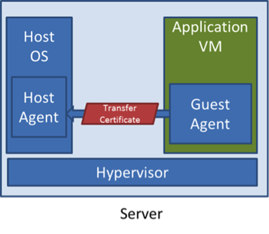
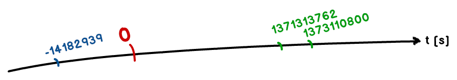
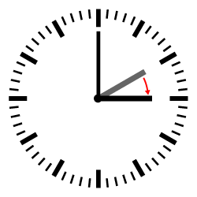

Krótka historia czasu
Tomasz Nurkiewicz
nurkiewicz@gmail.com | @tnurkiewicz
2013-07-06T11:40:00.000Z
Tomasz Nurkiewicz
nurkiewicz.blogspot.com
|
Zły dzień Microsoftu
blogs.msdn.com/b/windowsazure/archive/2012/03/09/summary-of-windows-azure-service-disruption-on-feb-29th-2012.aspx
Wynik programu?
Java:
Calendar cal = new GregorianCalendar(2012, FEBRUARY, 29, 15, 0);
cal.add(YEAR, 1);
System.out.println(cal.getTime());
C#:
DateTime cal = new DateTime(2012, 2, 29, 15, 0, 0).AddYears(1);
Console.WriteLine(cal);
- 28. lutego 2013, 15:00
- 29. lutego 2013, 15:00
- 1. marca 2013, 00:00
- 1. marca 2013, 15:00
IllegalArgumentException
True story
samcik.blox.pl/2012/03/Dzien-ktorego-nie-ma-Sprawdz-co-bank-wykreslil.html“[...] zgodnie z Regulaminem [...] odsetki nalicza się za faktyczną liczbę dni pozostawania środków na koncie [...] z tym, że przyjmuje się, że rok liczy 365 dni.
Rok 2012 liczy 366 dni, dlatego też
odsetki za dzień 29 lutego nie naliczają się.Z serdecznymi pozdrowieniami, [pewien] Bank”
Zła sekunda Linuksa

www.greenprophet.com/2012/07/leap-second-bug-consumes-megawatts-of-electricity/
Sekundy przestępne

en.wikipedia.org/wiki/Leap_second
Inne błędy
- Problem roku 2000 (Y2K)
- Problem roku 2011 (Taiwan)
- Problem roku 2038 (
Integer.MAX_VALUE) - Problem roku 2042 (IBM S/370)
- Problem roku 2107 (MS-DOS FAT)
- Problem 9. września '99 (9/9/99)
en.wikipedia.org/wiki/Time_formatting_and_storage_bugs
Zrozumieć domenę problemu
...każdego
Reprezentacja czasu

www.edali.org/persistence-of-memory.jsp
- Ilość sekund od arbitralnego momentu
- System kalendarzowy
Oś czasu
Czas "0"?
|
|
en.wikipedia.org/wiki/Epoch_date
java.util.Date
en.wikipedia.org/wiki/Calendar_date:
“A date in a calendar is a reference to a particular day represented within a calendar system. [...] A particular day may be represented by a different date in another calendar”
vs.
docs.oracle.com/javase/7/docs/api/java/util/Date.html:
“The class Date represents a specific instant in time, with millisecond precision.”
Strefy czasowe
java.util.Timezone
Różnica czasu między Warszawą a Sydney?

www.travel.com.hk/region/timezone.htm
Czas letni (Daylight saving time)

en.wikipedia.org/wiki/Daylight_saving_time
Czas letni
|  |
|
| Zima → Lato | Lato → Zima |
...a zatem?
www.travel.com.hk/region/timezone.htm
Reprezentacja
final TimeZone tz = TimeZone.getTimeZone("Europe/Warsaw");
ŹLE!
TimeZone.getTimeZone("GMT+01:00");
TimeZone.getTimeZone("Europe/warsaw");
Data kalendarzowa
java.util.Calendar
Lata przestępne - ŹLE!
def leapYear(year: Int): Boolean =
year % 4 == 0
Lata przestępne - od biedy
def leapYear(year: Int): Boolean =
(year % 4 == 0 && year % 100 != 0) ||
(year % 400 == 0)
Lata przestępne
def leapYear(year: Int): Boolean =
new GregorianCalendar(year, JANUARY, 1).
getActualMaximum(DAY_OF_YEAR) > 365
Zagadka
Calendar c = Calendar.getInstance();
System.out.println(c.get(Calendar.YEAR));
Mamy (gregoriański) rok 2013
$ java ...
2013
A tymczasem w Tajlandii...
$ java -Duser.country=TH -Duser.language=th ...
2556
...i w Japonii...
$ java -Duser.country=JP -Duser.language=ja -Duser.variant=JP ...
25
Lepiej:
Calendar c = new GregorianCalendar();
Jeszcze lepiej:
Calendar c = new GregorianCalendar(timeZone);
Na wszelki wypadek...
Calendar c = new GregorianCalendar(timeZone, locale);
Date czy Calendar?
- "...po innym zdarzeniu"
- "...w ciągu 10 sekund"
- "...w ciągu godziny"
- "...w ciągu 24 godzin"
- "...w ciągu jednego dnia"
- "...w 2013 roku"
- "...po 17:00"
- "...w piątek"
Praktyka
Joda Time
final DateTime yearLater = new DateTime(2012, 2, 29, 15, 0).plusYears(1);
Joda Time w JAX-WS
import org.joda.time.DateTime;
import javax.xml.bind.DatatypeConverter;
public class XsdJodaTimeConverter {
public static DateTime unmarshal(String dateTime) {
final long millis = DatatypeConverter.
parseDate(dateTime).
getTimeInMillis();
return new DateTime(millis);
}
public static String marshal(DateTime calendar) {
return DatatypeConverter.printDate(
calendar.toGregorianCalendar()
);
}
}
JAX-WS: plik .xjb
<bindings version="1.0" xmlns="http://java.sun.com/xml/ns/jaxb" xmlns:xs="http://www.w3.org/2001/XMLSchema">
<globalBindings>
<javaType xmlType="xs:dateTime"
name="org.joda.time.DateTime"
parseMethod="XsdJodaTimeConverter.unmarshal"
printMethod="XsdJodaTimeConverter.marshal"/>
</globalBindings>
</bindings>
Joda Time w JPA 2.1
import org.joda.time.Instant;
import javax.persistence.AttributeConverter;
import javax.persistence.Converter;
import java.util.Date;
@Converter(autoApply = true)
public class JodaTimeConverter implements AttributeConverter<Instant, Date> {
@Override
public Date convertToDatabaseColumn(Instant attr) {
return attr != null? attr.toDate(): null;
}
@Override
public Instant convertToEntityAttribute(Date dbData) {
return dbData != null? new Instant(dbData): null;
}
}
Testowanie - narzędzia
- Kontrolowane źródło czasu (fake system clock)
- "Egzotyczna" domyślna strefa czasowa
- Nie śpij! (
Thread.sleep() - ScalaCheck
Testowanie - przypadki
- Początek/koniec miesiąca/roku
- Dni powszednie i weekendy
- 29 lutego
- Strefy czasowe, czas letni
ScalaCheck i ScalaTest
implicit override val generatorDrivenConfig =
PropertyCheckConfig(minSuccessful = 10000, workers = 4)
test("any date +1 year and -1 year should yield same date back") {
check {
random: Date => {
val plusMinusYear = new GregorianCalendar
plusMinusYear.setTime(random)
plusMinusYear.add(YEAR, 1)
plusMinusYear.add(YEAR, -1)
random == plusMinusYear.getTime
}
}
}
Negatywny rezultat
Falsified after 2665 passed tests:
arg0 = Mon Feb 29 03:21:22 CET 73843340
Zdarzenia w przyszłości
Quartz scheduler
newTrigger()
.startAt(futureDate(1, YEAR))
.build();
JMS z opóźnieniem
MessageProducer producer = session.createProducer(destination);
TextMessage message = session.createTextMessage("...hello, delayed!");
message.setLongProperty(ScheduledMessage.AMQ_SCHEDULED_DELAY, oneYearMillis);
producer.send(message);
Bonus / Computus
(defn easter [year]
(let [
a (mod year 19)
b (Math/floor (/ year 100))
c (mod year 100)
d (Math/floor (/ b 4))
e (mod b 4)
f (Math/floor (/ (+ b 8) 25))
g (Math/floor (/ (inc (- b f)) 3))
h (mod (+ (- (+ (* 19 a) b) d g) 15) 30)
i (Math/floor (/ c 4))
k (mod c 4)
L (mod (- (+ 32 (* 2 e) (* 2 i)) h k) 7)
m (Math/floor (/ (+ a (* 11 h) (* 22 L)) 451))
n (- (+ h L 114) (* 7 m))
month (dec (Math/floor (/ n 31)))
day (inc (mod n 31))]
(java.util.GregorianCalendar. year month day)))
Bugi, więcej bugów...
- "Due to the lack of [time] synchronization [...] a car bomb went off [...] one hour earlier than expected" (catless.ncl.ac.uk/Risks/20.58.html#subj12)
- "F-22 Raptors [...] experienced multiple computer crashes coincident with their crossing of [...] the International Date Line" (en.wikipedia.org/wiki/List_of_software_bugs)
- "Damage to a German steel facility occurred during a DST transition" (en.wikipedia.org/wiki/Daylight_Savings_Time)
- www.wired.com/wiredenterprise/2012/07/leap-second-bug-wreaks-havoc-with-java-linux
- www.theregister.co.uk/2012/07/02/leap_second_crashes_airlines
- Niesłuszne posądzenie o defraudację i kradzież (www.cs.tau.ac.il/~nachumd/horror.html - [37])
- Katalog kilkuset błędów, stan na rok 2000 (!) (www.csl.sri.com/users/neumann/cal.html)
Przydatne i ciekawe
- www.timeanddate.com - wszystko o czasie
- www.epochconverter.com - czas uniksowy
- www.odi.ch/prog/design/datetime.php - kanwa tej prezentacji
- tycho.usno.navy.mil/systime.html - definicje TAI, UT, UTC...
- www.bbc.co.uk/news/world-asia-16351377 - Samoa and Tokelau skip a day for dateline change
Dziękuję za poświęcony... czas!
nurkiewicz@gmail.com
Twitter: @tnurkiewicz